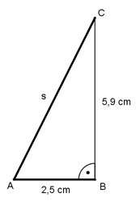

Aufgabe 314 Auf einem Zylinder mit einem Durchmesser von 5 cm und einer Höhe von 6,3 cm sitzen am einen Ende ein 5,9 cm hoher Kegel, am anderen eine Halbkugel mit gleicher Grundfläche wie der Zylinder. Wie groß sind das Volumen V und die Oberfläche O des Körpers? Volumen = Zylinder + Halbkugel + Kegel л * d3 л * rZ2 * hK V = л * rZ2 * h + -------- + -------------- 12 3 rZ = dZ/2 = 5 cm/2 = 2,5 cm л * 53 V = л * 2,52 * 6,3 + --------- + 12 л * 2,52 * 5,9 + ----------------- cm3 3 V = 123,6 cm3 + 32,7 cm3 + 38,6 cm3 = 194,9 cm3 Berechnung der Kegelmantellinie s:

Satz von Pythagoras im Dreieck ABC: s2 = AB2 + BC2 = = 2,52 cm2 + 5,92 cm2 = 41,1 cm2 |√ s = 6,4 cm Oberfläche = = Zylindermantel + Halbkugel + Kegelmantel d2 * л O = 2 * л * rZ * h + --------- + л * rZ * s 2 52 * л O = 2 * л * 2,5 * 6,3 cm + --------- + 2 + л * 2,5 * 6,4 cm2 O = 98,9 cm2 + 39,3 cm2 + 50,2 cm2 = 188,4 cm2